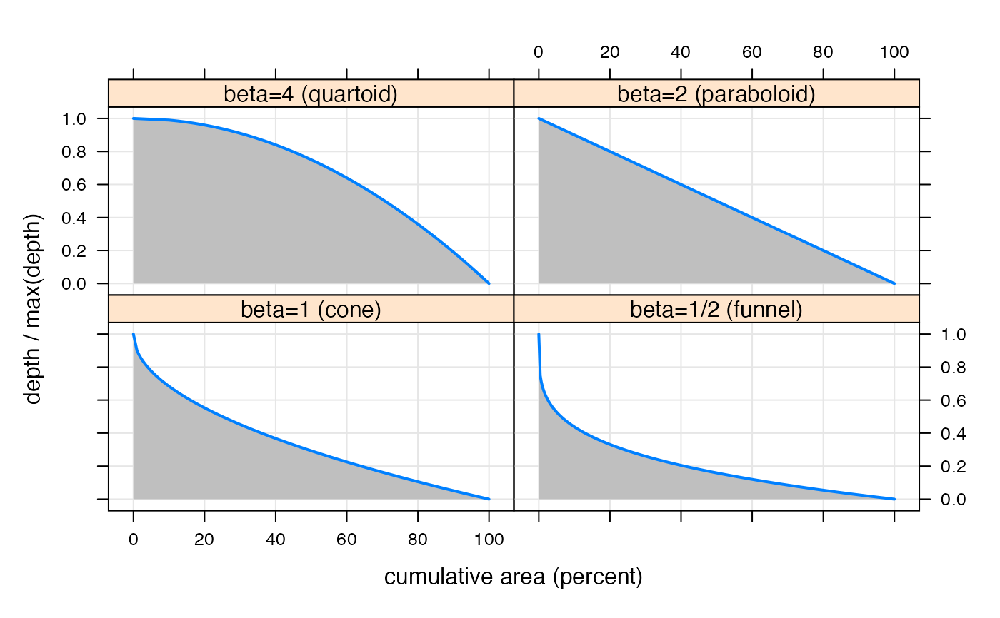
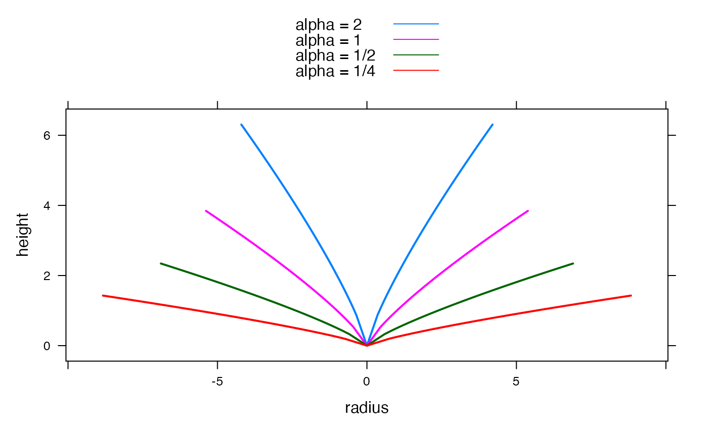

Poweroid geometry (cones, paraboloids, etc).
poweroid( alpha = NULL, beta = NULL, V = NULL, H = NULL, A = if (!missing(r)) pi * r^2, r = if (!missing(A)) sqrt(A/pi), ..., rel.error = FALSE, polish = FALSE, details = FALSE )
| alpha | scale parameter. |
|---|---|
| beta | shape parameter. |
| V | volume. |
| H | height. |
| A | area (of circular base). |
| r | radius (of circular base). |
| ... | passed to |
| rel.error | if |
| polish | to apply |
| details | to return calibration details when fitting parameters. |
If alpha and beta are specified, a data.frame
with columns V, H, A and r.
Otherwise, a list with components alpha and beta.
A poweroid is a generalisation of a cone, paraboloid (3D parabola), etc.
A poweroid is defined by the surface of rotation (around the height axis) of the curve: $$H = \alpha * r ^ \beta$$
where H is height, r is radius, and alpha and beta are parameters.
Then, as special cases,
corresponds to a cone.
corresponds to a paraboloid.
is sometimes called a quartoid.
has a funnel shape.
The poweroid function can be used in three different ways:
If alpha and beta are specified, any one of V,
H, A or r can be used to calculate all the others.
If beta is specified, any two of V, H, or A / r
can be used to derive alpha.
Otherwise, any two of V, H, or A / r can be used to
estimate alpha and beta. In this case, multiple values must be
given for each measurement, and the parameters are fitted to these using
optimize. (Specifically, the beta parameter is fitted, while
the alpha parameter is derived from beta on each iteration.)
The examples below demonstrate the different shapes and depth distributions that are possible.
http://mathworld.wolfram.com/Paraboloid.html
http://mathworld.wolfram.com/Poweroid.html
Felix Andrews felix@nfrac.org
## USE CASE 1: specified parameters ## A cone with height H and slope alpha poweroid(H = 1:10, alpha = 2, beta = 1)#> V A H r #> 1 0.2617994 0.7853982 1 0.5 #> 2 2.0943951 3.1415927 2 1.0 #> 3 7.0685835 7.0685835 3 1.5 #> 4 16.7551608 12.5663706 4 2.0 #> 5 32.7249235 19.6349541 5 2.5 #> 6 56.5486678 28.2743339 6 3.0 #> 7 89.7971900 38.4845100 7 3.5 #> 8 134.0412866 50.2654825 8 4.0 #> 9 190.8517537 63.6172512 9 4.5 #> 10 261.7993878 78.5398163 10 5.0## Take four different shapes: beta = 4 / 2 / 1 / 0.5 ## Calculate geometry, given Volume values from 0 to 100. shapedat <- list( `beta=4 (quartoid)` = poweroid(V = (0:1000) / 10, beta = 4, alpha = 0.0078125), `beta=2 (paraboloid)` = poweroid(V = (0:1000) / 10, beta = 2, alpha = 0.125), `beta=1 (cone)` = poweroid(V = (0:1000) / 10, beta = 1, alpha = 0.5), `beta=1/2 (funnel)` = poweroid(V = (0:1000) / 10, beta = 0.5, alpha = 1) ) ## Plot cross sections, all with V = 100 and intersecting at r = 4: shapedf <- do.call(make.groups, shapedat) xyplot(c(H, H) ~ c(-r, r), shapedf, groups = rep(which, 2), type = "a", lwd = 2, xlab = "radius", ylab = "height", auto.key = list(lines = TRUE, points = FALSE) )## Compare general form of depth distributions: depthdat <- lapply(shapedat, transform, H = (1 - H / max(H)), A = 100 * A / max(A) ) depthdf <- do.call(make.groups, depthdat) xyplot(H ~ A | which, depthdf, as.table = TRUE, xlab = "cumulative area (percent)", ylab = "depth / max(depth)", panel = function(x, y, ...) { panel.grid(h = -1, v = -1) panel.polygon(c(x, 0), c(y, 0), col = grey(0.75), border = "transparent" ) panel.xyplot(x, y, ...) }, type = "l", par.settings = simpleTheme(lwd = 2) )## Compare effect of different alpha, with a fixed Volume V = 100 ## beta is constant at 0.8 scaledat <- list( `alpha = 2` = poweroid(V = (0:1000) / 10, beta = 0.8, alpha = 2), `alpha = 1` = poweroid(V = (0:1000) / 10, beta = 0.8, alpha = 1), `alpha = 1/2` = poweroid(V = (0:1000) / 10, beta = 0.8, alpha = 0.5), `alpha = 1/4` = poweroid(V = (0:1000) / 10, beta = 0.8, alpha = 0.25) ) scaledf <- do.call(make.groups, scaledat) xyplot(c(H, H) ~ c(-r, r), scaledf, groups = rep(which, 2), type = "a", lwd = 2, xlab = "radius", ylab = "height", auto.key = list(lines = TRUE, points = FALSE) )depthdat <- lapply(scaledat, transform, H = max(H) - H) depthdf <- do.call(make.groups, depthdat) xyplot(H ~ A, groups = which, depthdf, xlab = "cumulative area", ylab = "depth", panel = function(...) { panel.superpose(..., panel.groups = function(x, y, ...) { panel.polygon(c(x, 0), c(y, 0), col = grey(0.25), alpha = 0.25) }) panel.xyplot(...) }, type = "l", par.settings = simpleTheme(lwd = 2), auto.key = list(lines = TRUE, points = FALSE) )## USE CASE 2: Derive alpha given beta. poweroid(V = 1000, A = 20, beta = 2)#> $alpha #> [1] 15.70796 #> #> $beta #> [1] 2 #>poweroid(V = 1000, H = 5, beta = 1.5)#> $alpha #> [1] 0.1175107 #> #> $beta #> [1] 1.5 #>## derive the alpha values used at the top of this section poweroid(r = 4, H = 2, beta = c(4, 2, 1, 0.5))#> $alpha #> [1] 0.0078125 0.1250000 0.5000000 1.0000000 #> #> $beta #> [1] 4.0 2.0 1.0 0.5 #>## USE CASE 3: fit alpha and beta to given data poweroid(V = c(100, 1000, 10000), A = c(5, 52, 127))#> $alpha #> [1] 4.829026 #> #> $beta #> [1] 1.898179 #># --> alpha = 4.83, beta = 1.9 ## simulate with these parameters to see how well they fit A: poweroid(V = c(100, 1000, 10000), alpha = 4.83, beta = 1.9)#> V A H r #> 1 100 11.94702 17.18112 1.950091 #> 2 1000 38.91169 52.75102 3.519372 #> 3 10000 126.73619 161.96097 6.351487# --> A: 11.95 38.91 126.70 ## try fitting again, based on relative error this time: poweroid(V = c(100, 1000, 10000), A = c(5, 52, 127), rel.error = TRUE)#> $alpha #> [1] 26.59881 #> #> $beta #> [1] 1.135762 #># --> alpha = 26.6, beta = 1.14 ## simulate with these parameters to see how well they fit A: poweroid(V = c(100, 1000, 10000), alpha = 26.6, beta = 1.14)#> V A H r #> 1 100 6.715555 41.01502 1.462063 #> 2 1000 29.108818 94.62376 3.043949 #> 3 10000 126.173239 218.30191 6.337365# --> A: 6.72 29.11 126.20